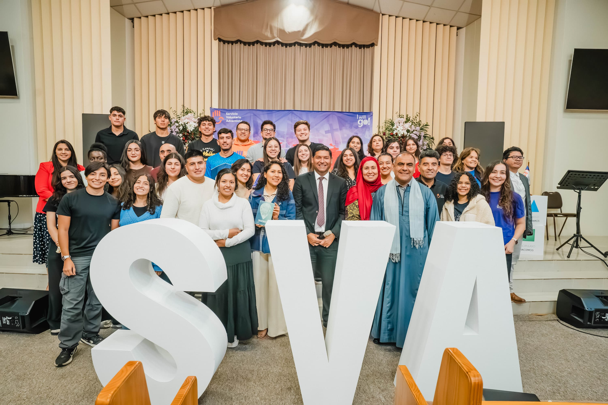
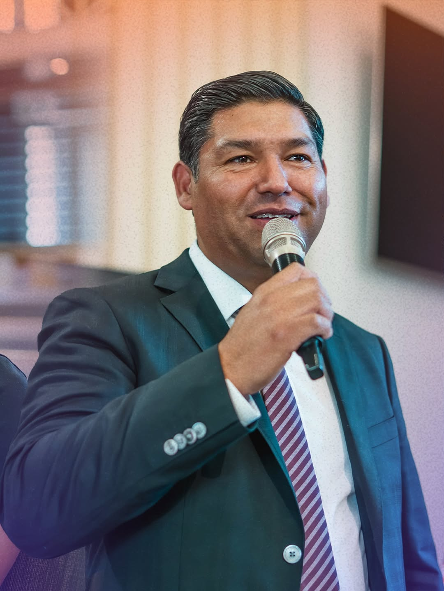
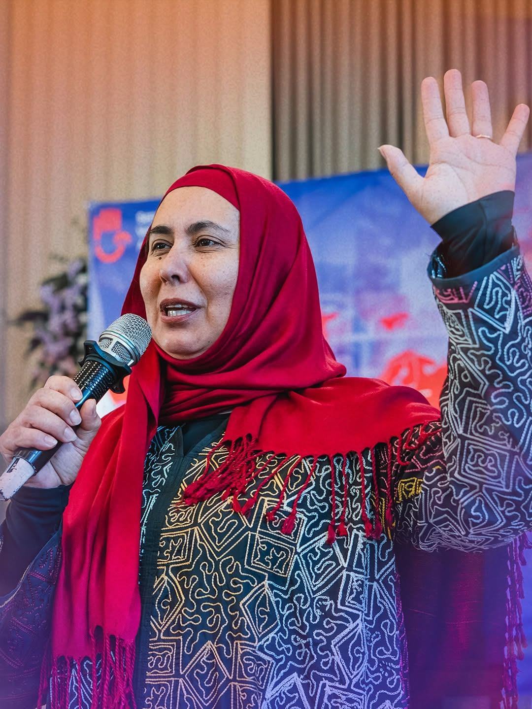
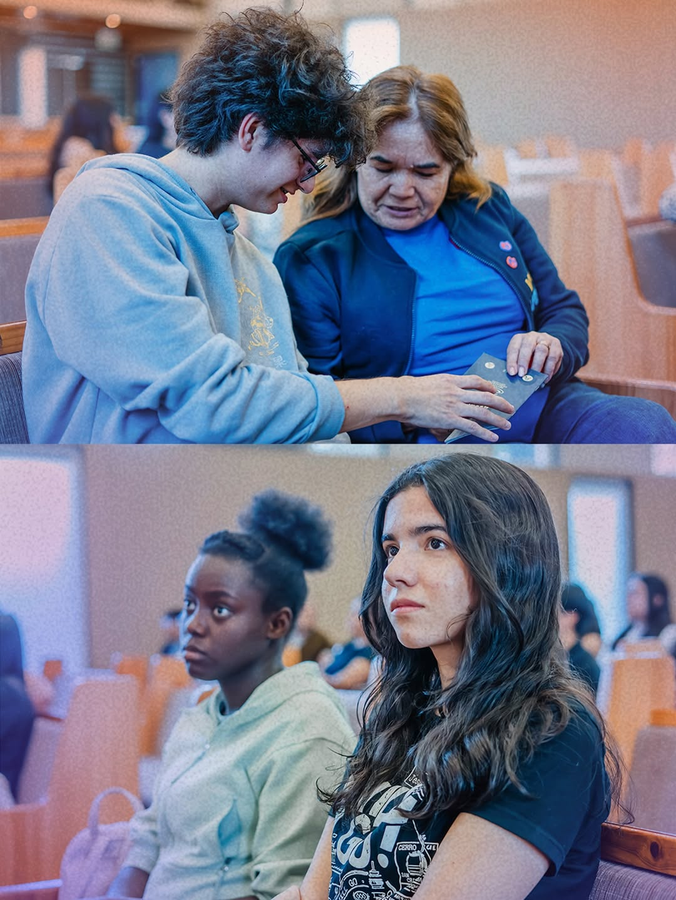
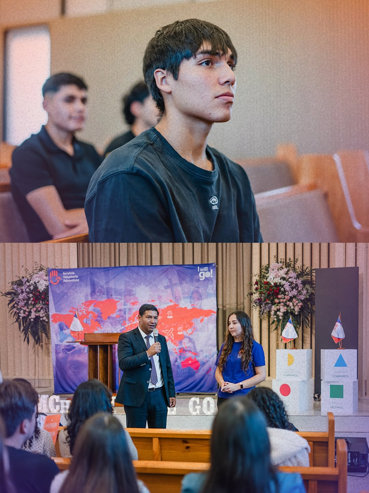
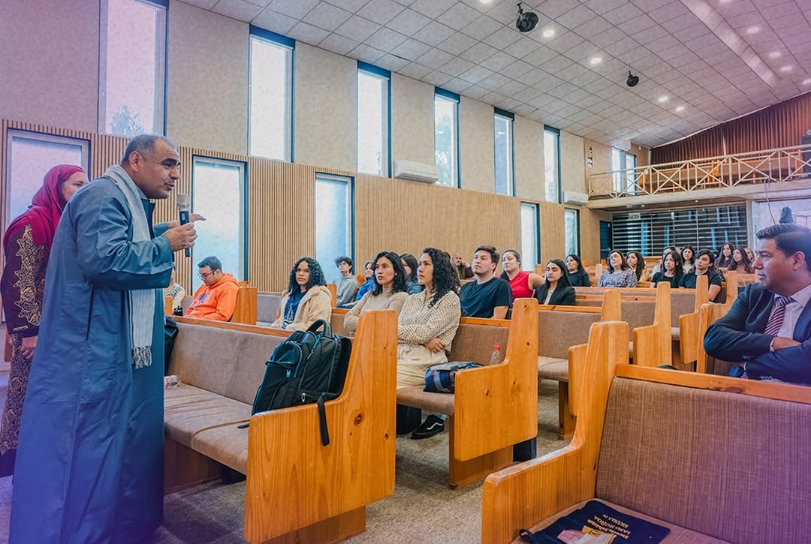

Misioneros desde el Medio Oriente hasta Australia inspiraron a 30 participantes en la Primera Escuela de Misión, un espacio que busca despertar el llamado al servicio voluntario adventista.
En la iglesia de Ñuñoa se llevó a cabo la Primera Escuela de Misión, una jornada de formación que reunió a cerca de 30 participantes comprometidos con responder al llamado de compartir esperanza y servir a otros.
La actividad se desarrolló en un ambiente de aprendizaje e inspiración, donde los asistentes conocieron experiencias reales de servicio misionero a través de testimonios de primera mano.

Compartieron los desafíos y aprendizajes de vivir una fe activa en contextos distintos, destacando la importancia de la dependencia de Dios en cada paso.
Motivó a los presentes con su experiencia personal, invitando a considerar el servicio como un propósito de vida más allá de las fronteras.

Uno de los momentos más significativos fue la participación de los expositores invitados, el profesor Hugo Cáceres y Paula Navarrete, quienes compartieron su labor como misioneros en la Nile Union Academy, en Medio Oriente. A través de sus testimonios, transmitieron los desafíos y aprendizajes de vivir una fe activa en contextos distintos.


La misión no depende del lugar, sino de la disposición de cada persona para decir: "Yo voy."
Esta instancia no sólo entregó contenidos formativos, sino que también buscó generar un espacio de reflexión y decisión personal. Para muchos participantes, la jornada representó un punto de inflexión, reafirmando su disposición a involucrarse de manera más activa en la misión.

La Escuela de Misión se enmarca dentro del espíritu del Servicio Voluntario Adventista (SVA), programa oficial de la Iglesia Adventista del Séptimo Día que conecta a personas con oportunidades de voluntariado en distintas partes del mundo. Más que una actividad puntual, esta iniciativa refleja un movimiento que busca preparar y movilizar a la iglesia.